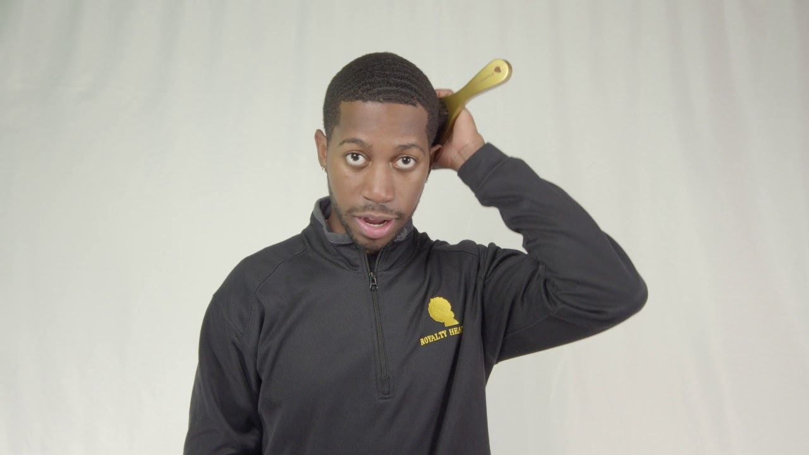

Teaching Your Kid the Brush Routine: Angles, Habits and Patience
The moment a kid brushes their own waves correctly is the moment the routine becomes theirs — and routines kids own are the ones that survive. Royalty Headwear's (@royaltyheadwear) technique video below shows the adult form to model. This guide translates teaching it to a child: the simplified angle map, how to use the mirror as a teaching tool, how the habit gets built without battles, and the judgement call every parent hits — when to fix their work and when to let 'good enough' ride.
The angle map, kid-sized
Teach four directions with landmarks a child can see: top brushes toward the forehead ('toward your eyebrows'), the back brushes down ('toward your shirt'), and the sides brush down-and-forward ('toward your front pockets' is the cue that lands for a lot of kids). Landmarks beat degrees at every age, but especially under twelve.
Brush together in the same mirror for the first weeks — you on your hair, them on theirs, same order, same directions. Kids copy form the way they copy everything: by watching it happen next to them daily. Correct gently, mid-session, by demonstrating rather than grabbing the brush back; the brush stays in their hand unless they hand it to you.
Building the habit without a battle
Attach brush time to an existing anchor — after the bath, before the bedtime story, during a favourite show's first minutes. Habits anchored to routines survive; habits scheduled in the abstract evaporate. Five minutes is the session; a timer they can see makes it a game with an end, not an open-ended sentence.
Praise the process specifically — 'your sides are connecting because you kept the angle right' teaches more than 'looks good.' And keep a simple progress ritual: a photo every Sunday, same mirror. Kids who can see their own pattern arriving will defend brush time themselves; you will be demoted to photographer, which is the job you wanted.
Helping vs handing over
Your hands-on role shrinks in stages: you brush, then you brush together, then they brush and you do a one-minute 'finishing pass,' then the finishing pass becomes a weekly check. The crown and the back are the last territories to hand over — they are the hardest to self-teach at any age, so keep helping there longest, using the mirror so they can see what your hands are doing.
If motivation dips — it will — do not escalate pressure. Shorten the session, return to brushing together, and let the next haircut's fresh start carry the excitement. This is a long game: you are not raising a kid with waves this month. You are raising a person who knows how to care for their crown for life.
Watch: proper brushing technique from Royalty Headwear — the form to model before you hand over the brush
Video: “How To Brush Your Hair for 360 Waves!” by Royalty Headwear (@royaltyheadwear) · Watch on YouTube
Shop the gear
Everything in this guide runs on the right gear: a durag that holds compression without slipping, a cap that stays put, and fabric that treats your hair right. The durag.store launch lineup is built to that standard — dual-layer construction, long tails, and stitching made to survive the routine. Join the launch list and use code GOLDSTANDARD for 15% off your first order.
Keep learning
- Kids' Waves: A Gentle Start for Young Kings and Queens — Basic · Kids & Family
- Baby and Toddler Bonnets: Protecting Little Hair From Day One — Basic · Kids & Family
- How to Tie a Durag for 360 Waves: The Standard Tie, Step by Step — Basic · Tying & Basics
Sources: Video — “How To Brush Your Hair for 360 Waves!” by Royalty Headwear (@royaltyheadwear), youtube.com. Guide written by the durag.store Wave Lab.